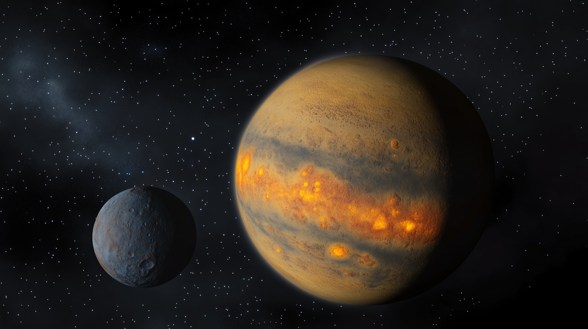

3 La física del plasma warp para el lector con prisa.

Este capítulo puede saltarse sin culpa: los manuales del proyecto no dependen de él. Se incluye por razones de completitud y por si el lector, en alguna quedada de cuñados/as, se ve enfrentado a la incómoda pregunta de “cómo funciona exactamente eso del warp”.
3.1 Los cuatro postulados de la Escuela Kwisatz–Herbert.
El plasma warp es, técnicamente, un fenómeno de acoplamiento resonante entre la métrica local del espacio-tiempo y un estado isomérico metaestable de ciertos núcleos pesados. La teoría estándar, formalizada por la Escuela Kwisatz–Herbert poco después del descubrimiento de 2084, se apoya en cuatro postulados que enunciamos sin demasiado rigor:
Cualquier volumen material en reposo genera microperturbaciones en el campo de Higgs local. En condiciones ordinarias, estas perturbaciones son insignificantes y no producen efectos macroscópicos observables.
Los núcleos de melangium (\(^{297}\)Mg, isótopo transuránico) poseen un estado isomérico de espín \(11/2^{+}\) cuya vida media (aproximadamente \(4{,}7 \cdot 10^{-3}\) s) resulta compatible con la escala de resonancia del vacío cuántico.
Cuando una nube densa de este isómero se somete a un plasma toroidal confinado magnéticamente, se produce una coherencia macroscópica del campo Higgs perturbado, que se manifiesta como una burbuja de espacio-tiempo localmente deformado (una métrica de Alcubierre modificada por un factor de fase espinorial).
La nave contenida en la burbuja se desplaza junto con la deformación métrica, no dentro de ella, por lo que su velocidad instantánea respecto al espacio circundante es formalmente indefinida —lo que evita, elegantemente, contradecir la relatividad especial—.
En términos comprensibles para el lector no versado en teoría de campos: la nave no se mueve más deprisa que la luz; el espacio-tiempo, sencillamente, se pliega delante y detrás de ella con más o menos ganas según la calidad del isómero.
3.2 El monopolio de Arrakis.
El problema práctico es que el melangium natural —la especia— solo se encuentra en cantidades industriales en el sistema estelar de Arrakis, donde una supernova ancestral generó las condiciones gravitatorias y de flujo neutrónico necesarias para sintetizarlo in situ y en abundancia. La versión sintética producida en laboratorio (proto-especia) funciona, pero con una eficiencia del 3–5% respecto al natural, lo que la limita a saltos interestelares dentro de la propia Vía Láctea. Todo viaje intergaláctico requiere, sin excepción, especia natural arrakiana. Los sucesivos intentos de sintetizar el isómero puro a escala industrial han acabado en desastres de magnitud tal que el TLCI incorporó en 2135 una moratoria específica al respecto.
Nota tranquilizadora. El pasajero medio experimenta el trayecto warp como un ligero mareo de unos minutos, seguido de un almuerzo. Los efectos secundarios documentados incluyen sensación de déjà vu al desembarcar y una tendencia —afortunadamente pasajera— a discutir con voz solemne sobre la naturaleza del tiempo.
Este monopolio geológico es la razón última por la que el sector del transporte interestelar está tan concentrado en Arrakis, y por la que Arrakis Freight encabeza casi todos los rankings del Informe Bluebird. La geografía manda, incluso —o especialmente— a escala galáctica.